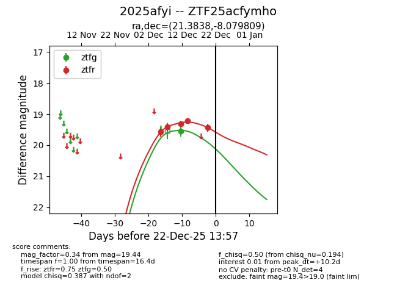
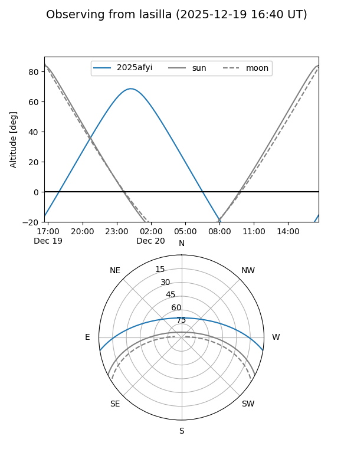
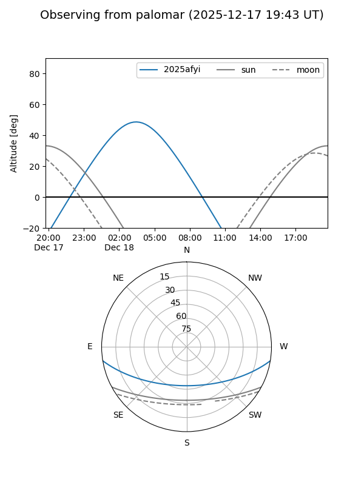

2025afyi
Target 2025afyi at 2025-12-18 11:17
Aliases and brokers:
FINK: fink-portal.org/ZTF25acfymho
Lasair: lasair-ztf.lsst.ac.uk/objects/ZTF25acfymho
ALeRCE: alerce.online/object/ZTF25acfymho
TNS: wis-tns.org/object/2025afyi
YSE: ziggy.ucolick.org/yse/transient_detail/2025afyi
alt names
ZTF25acfymho (ztf,fink_ztf)
2025afyi (tns,yse)
Coordinates:
equatorial (ra, dec) = 21.3838,-8.07981
equatorial (HMS+DMS) = 01:25:32.11,-08:04:47.31
galactic (l, b) = (147.4756,-69.31052)
Photometry
last ztfg=19.55, ztfr=19.22
1 ztfg, 4 ztfr detections
Lightcurve

Visibility


Additional plots